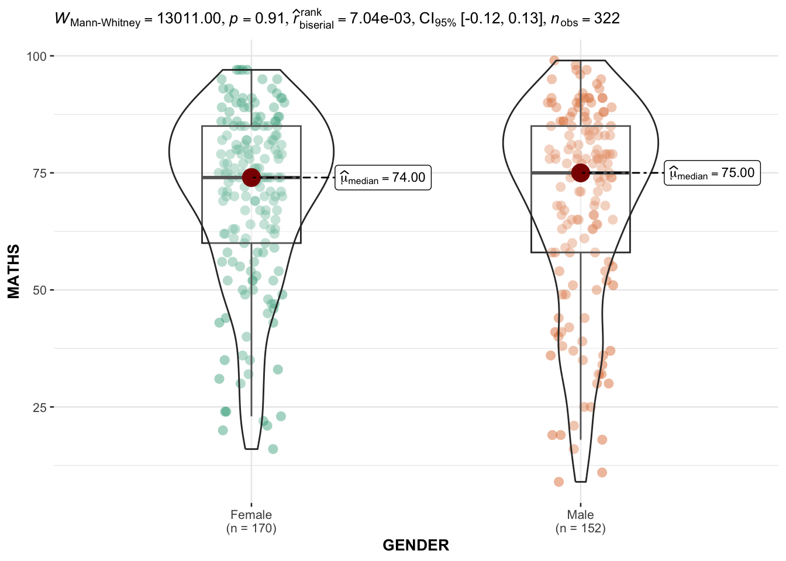
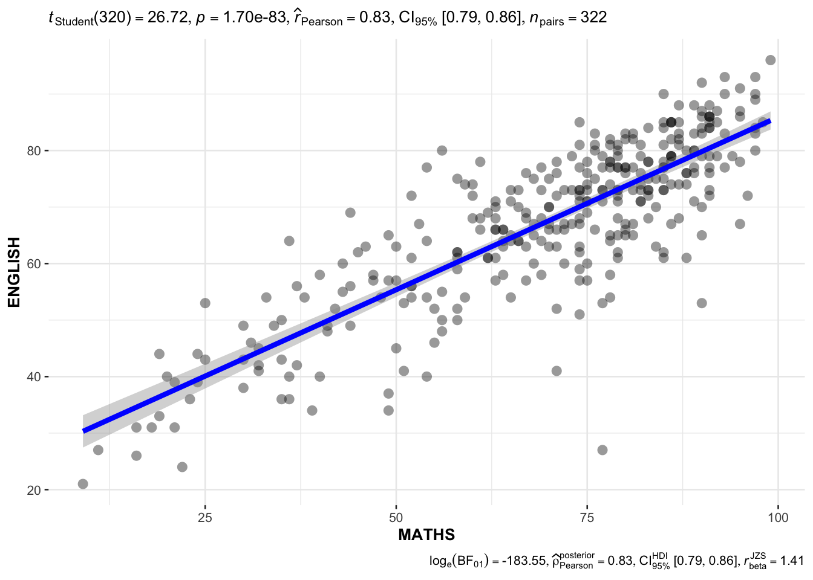
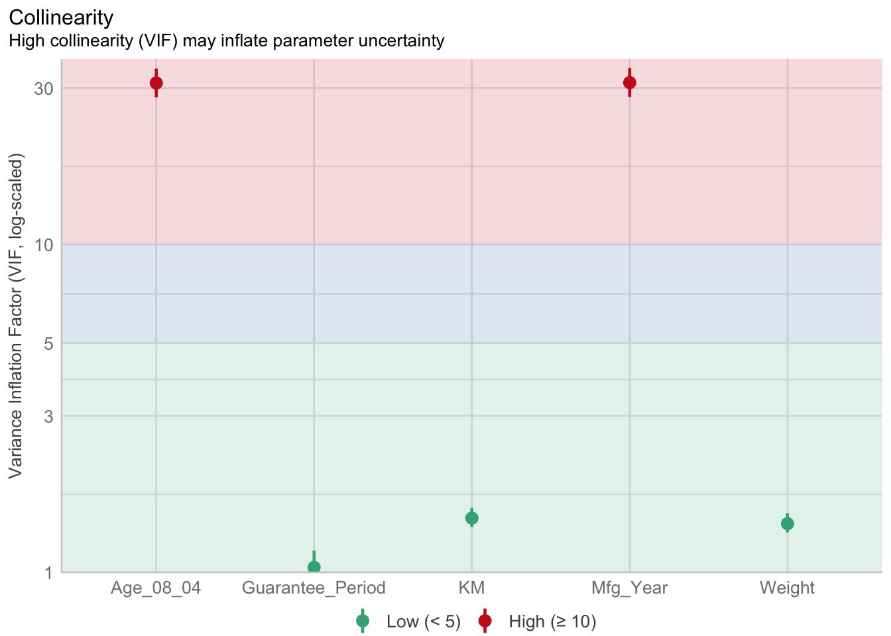
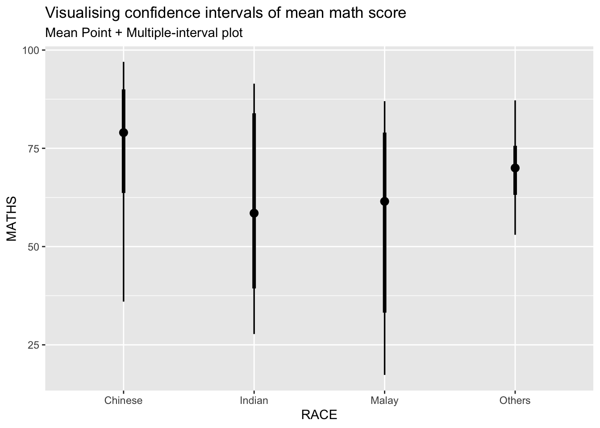

pacman::p_load(ggstatsplot, tidyverse)Hands-on Exercise 4
4 Visual Statistical Analysis
4.1 Visual Statistical Analysis with ggstatsplot
ggstatsplot  is an extension of ggplot2 package for creating graphics with details from statistical tests included in the information-rich plots themselves.
is an extension of ggplot2 package for creating graphics with details from statistical tests included in the information-rich plots themselves.
- To provide alternative statistical inference methods by default.
- To follow best practices for statistical reporting. For all statistical tests reported in the plots, the default template abides by the [APA](https://my.ilstu.edu/~jhkahn/apastats.html) gold standard for statistical reporting. For example, here are results from a robust t-test:
4.2 Getting Started
4.2.1 Installing and launching R packages
In this exercise, ggstatsplot and tidyverse will be used.
4.2.2 Importing data
exam <- read_csv('data/exam_data.csv')
head(exam)# A tibble: 6 × 7
ID CLASS GENDER RACE ENGLISH MATHS SCIENCE
<chr> <chr> <chr> <chr> <dbl> <dbl> <dbl>
1 Student321 3I Male Malay 21 9 15
2 Student305 3I Female Malay 24 22 16
3 Student289 3H Male Chinese 26 16 16
4 Student227 3F Male Chinese 27 77 31
5 Student318 3I Male Malay 27 11 25
6 Student306 3I Female Malay 31 16 164.2.3 One-sample test: gghistostats() method
In the code chunk below, gghistostats() is used to to build an visual of one-sample test on English scores.
set.seed(1234)
gghistostats(
data = exam,
x = ENGLISH,
type = "bayes",
test.value = 60,
xlab = "English scores"
)
Default information: - statistical details - Bayes Factor - sample sizes - distribution summary
4.2.4 Unpacking the Bayes Factor
A Bayes factor is the ratio of the likelihood of one particular hypothesis to the likelihood of another. It can be interpreted as a measure of the strength of evidence in favor of one theory among two competing theories.
That’s because the Bayes factor gives us a way to evaluate the data in favor of a null hypothesis, and to use external information to do so. It tells us what the weight of the evidence is in favor of a given hypothesis.
When we are comparing two hypotheses, H1 (the alternate hypothesis) and H0 (the null hypothesis), the Bayes Factor is often written as B10. It can be defined mathematically as

- The Schwarz criterion is one of the easiest ways to calculate rough approximation of the Bayes Factor.
4.2.5 How to interpret Bayes Factor
A Bayes Factor can be any positive number. One of the most common interpretations is this one—first proposed by Harold Jeffereys (1961) and slightly modified by Lee and Wagenmakers in 2013:

4.2.6 Two-sample mean test: ggbetweenstats()
In the code chunk below, ggbetweenstats() is used to build a visual for two-sample mean test of Maths scores by gender.
ggbetweenstats(
data = exam,
x = GENDER,
y = MATHS,
type = "np",
messages = FALSE
)
Default information: - statistical details - Bayes Factor - sample sizes - distribution summary
4.2.7 Oneway ANOVA Test: ggbetweenstats() method
In the code chunk below, ggbetweenstats() is used to build a visual for One-way ANOVA test on English score by race.
ggbetweenstats(
data = exam,
x = RACE,
y = ENGLISH,
type = "p",
mean.ci = TRUE,
pairwise.comparisons = TRUE,
pairwise.display = "s",
p.adjust.method = "fdr",
messages = FALSE
)
“ns” → only non-significant
“s” → only significant
“all” → everything
4.2.7.1 ggbetweenstats - Summary of tests


4.2.8 Significant Test of Correlation: ggscatterstats()
In the code chunk below, ggscatterstats() is used to build a visual for Significant Test of Correlation between Maths scores and English scores.
ggscatterstats(
data = exam,
x = MATHS,
y = ENGLISH,
marginal = FALSE,
)
4.2.9 Significant Test of Association (Depedence) : ggbarstats() methods
In the code chunk below, the Maths scores is binned into a 4-class variable by using cut().
exam1 <- exam %>%
mutate(MATHS_bins =
cut(MATHS,
breaks = c(0,60,75,85,100))
)In this code chunk below ggbarstats() is used to build a visual for Significant Test of Association
ggbarstats(exam1,
x = MATHS_bins,
y = GENDER)
4.3 Visualising Models
In this section, you will learn how to visualise model diagnostic and model parameters by using parameters package.
- Toyota Corolla case study will be used. The purpose of study is to build a model to discover factors affecting prices of used-cars by taking into consideration a set of explanatory variables.
4.4 Installing and loading the required libraries
pacman::p_load(readxl, performance, parameters, see)4.4.1 Importing Excel file: readxl methods
In the code chunk below, read_xls() of readxl package is used to import the data worksheet of ToyotaCorolla.xls workbook into R.
car_resale <- read_xls("data/ToyotaCorolla.xls",
"data")
car_resale# A tibble: 1,436 × 38
Id Model Price Age_08_04 Mfg_Month Mfg_Year KM Quarterly_Tax Weight
<dbl> <chr> <dbl> <dbl> <dbl> <dbl> <dbl> <dbl> <dbl>
1 81 TOYOTA … 18950 25 8 2002 20019 100 1180
2 1 TOYOTA … 13500 23 10 2002 46986 210 1165
3 2 TOYOTA … 13750 23 10 2002 72937 210 1165
4 3 TOYOTA… 13950 24 9 2002 41711 210 1165
5 4 TOYOTA … 14950 26 7 2002 48000 210 1165
6 5 TOYOTA … 13750 30 3 2002 38500 210 1170
7 6 TOYOTA … 12950 32 1 2002 61000 210 1170
8 7 TOYOTA… 16900 27 6 2002 94612 210 1245
9 8 TOYOTA … 18600 30 3 2002 75889 210 1245
10 44 TOYOTA … 16950 27 6 2002 110404 234 1255
# ℹ 1,426 more rows
# ℹ 29 more variables: Guarantee_Period <dbl>, HP_Bin <chr>, CC_bin <chr>,
# Doors <dbl>, Gears <dbl>, Cylinders <dbl>, Fuel_Type <chr>, Color <chr>,
# Met_Color <dbl>, Automatic <dbl>, Mfr_Guarantee <dbl>,
# BOVAG_Guarantee <dbl>, ABS <dbl>, Airbag_1 <dbl>, Airbag_2 <dbl>,
# Airco <dbl>, Automatic_airco <dbl>, Boardcomputer <dbl>, CD_Player <dbl>,
# Central_Lock <dbl>, Powered_Windows <dbl>, Power_Steering <dbl>, …Notice that the output object car_resale is a tibble data frame.
4.4.2 Multiple Regression Model using lm()
The code chunk below is used to calibrate a multiple linear regression model by using lm() of Base Stats of R.
model <- lm(Price ~ Age_08_04 + Mfg_Year + KM +
Weight + Guarantee_Period, data = car_resale)
model
Call:
lm(formula = Price ~ Age_08_04 + Mfg_Year + KM + Weight + Guarantee_Period,
data = car_resale)
Coefficients:
(Intercept) Age_08_04 Mfg_Year KM
-2.637e+06 -1.409e+01 1.315e+03 -2.323e-02
Weight Guarantee_Period
1.903e+01 2.770e+01 4.4.3 Model Diagnostic: checking for multicolinearity:
In the code chunk, check_collinearity() of performance package.
check_collinearity(model)# Check for Multicollinearity
Low Correlation
Term VIF VIF 95% CI Increased SE Tolerance Tolerance 95% CI
KM 1.46 [ 1.37, 1.57] 1.21 0.68 [0.64, 0.73]
Weight 1.41 [ 1.32, 1.51] 1.19 0.71 [0.66, 0.76]
Guarantee_Period 1.04 [ 1.01, 1.17] 1.02 0.97 [0.86, 0.99]
High Correlation
Term VIF VIF 95% CI Increased SE Tolerance Tolerance 95% CI
Age_08_04 31.07 [28.08, 34.38] 5.57 0.03 [0.03, 0.04]
Mfg_Year 31.16 [28.16, 34.48] 5.58 0.03 [0.03, 0.04]check_c <- check_collinearity(model)
plot(check_c)
4.4.4 Model Diagnostic: checking normality assumption
In the code chunk, check_normality() of performance package.
model1 <- lm(Price ~ Age_08_04 + KM +
Weight + Guarantee_Period, data = car_resale)
check_n <- check_normality(model1)
plot(check_n)
4.4.5 Model Diagnostic: Check model for homogeneity of variances
In the code chunk, check_heteroscedasticity() of performance package.
check_h <- check_heteroscedasticity(model1)
plot(check_h)4.4.6 Model Diagnostic: Complete check
We can also perform the complete by using check_model().
check_model(model1)4.4.7 Visualizing Regression Parameters: see methods
In the code below, plot() of see package and parameters() of parameters package is used to visualise the parameters of a regression model.
plot(parameters(model1))
4.4.8 Visualizing Regression Parameters: ggcoefstats() methods
In the code below, ggcoefstats() of ggstatsplot package to visualise the parameters of a regression model.
ggcoefstats(model1,
output = "plot")
5 Visualizing Uncertainty
5.1 Installing and loading the packages
For the purpose of this exercise, the following R packages will be used, they are:
tidyverse, a family of R packages for data science process,
plotly for creating interactive plot,
gganimate for creating animation plot,
DT for displaying interactive html table,
crosstalk for for implementing cross-widget interactions (currently, linked brushing and filtering), and
ggdist for visualising distribution and uncertainty.
devtools::install_github("wilkelab/ungeviz")pacman::p_load(ungeviz, plotly, crosstalk,
DT, ggdist, ggridges,
colorspace, gganimate, tidyverse)5.2 Data import
For the purpose of this exercise, Exam_data.csv will be used.
exam <- read_csv("data/Exam_data.csv")5.3 Visualizing the uncertainty of point estimates: ggplot2 methods
A point estimate is a single number, such as a mean. Uncertainty, on the other hand, is expressed as standard error, confidence interval, or credible interval.
Important
- Don’t confuse the uncertainty of a point estimate with the variation in the sample
In this section, you will learn how to plot error bars of maths scores by race by using data provided in exam tibble data frame.
Firstly, code chunk below will be used to derive the necessary summary statistics.
my_sum <- exam %>%
group_by(RACE) %>%
summarise(
n=n(),
mean=mean(MATHS),
sd=sd(MATHS)
) %>%
mutate(se=sd/sqrt(n-1))
Tip
group_by()of dplyr package is used to group the observation by RACE,summarise()is used to compute the count of observations, mean, standard deviationmutate()is used to derive standard error of Maths by RACE, andthe output is save as a tibble data table called my_sum.
Note
For the mathematical explanation, please refer to Slide 20 of Lesson 4.
Next, the code chunk below will be used to display my_sum tibble data frame in an html table format.
knitr::kable(head(my_sum), format = 'html')| RACE | n | mean | sd | se |
|---|---|---|---|---|
| Chinese | 193 | 76.50777 | 15.69040 | 1.132357 |
| Indian | 12 | 60.66667 | 23.35237 | 7.041005 |
| Malay | 108 | 57.44444 | 21.13478 | 2.043177 |
| Others | 9 | 69.66667 | 10.72381 | 3.791438 |
5.3.1 Plotting standard error bars of point estimates
Now we are ready to plot the standard error bars of mean maths score by race as shown below.
ggplot(my_sum) +
geom_errorbar(
aes(x=RACE,
ymin=mean-se,
ymax=mean+se),
width=0.2,
colour="black",
alpha=0.9,
size=0.5) +
geom_point(aes
(x=RACE,
y=mean),
stat="identity",
color="red",
size = 1.5,
alpha=1) +
ggtitle("Standard error of mean maths score by rac")
Tip
The error bars are computed by using the formula mean+/-se.
For
geom_point(), it is important to indicate stat=“identity”.
5.3.2 Plotting confidence interval of point estimates
Instead of plotting the standard error bar of point estimates, we can also plot the confidence intervals of mean maths score by race.
ggplot(my_sum) +
geom_errorbar(
aes(x=reorder(RACE, -mean),
ymin=mean-1.96*se,
ymax=mean+1.96*se),
width=0.2,
colour="black",
alpha=0.9,
size=0.5) +
geom_point(aes
(x=RACE,
y=mean),
stat="identity",
color="red",
size = 1.5,
alpha=1) +
labs(x = "Maths score",
title = "95% confidence interval of mean maths score by race")
Tip
The confidence intervals are computed by using the formula mean+/-1.96*se.
The error bars is sorted by using the average maths scores.
labs()argument of ggplot2 is used to change the x-axis label.
5.3.3 Visualizing the uncertainty of point estimates with interactive error bars
In this section, you will learn how to plot interactive error bars for the 99% confidence interval of mean maths score by race as shown in the figure below.
shared_df = SharedData$new(my_sum)
bscols(widths = c(4,8),
ggplotly((ggplot(shared_df) +
geom_errorbar(aes(
x=reorder(RACE, -mean),
ymin=mean-2.58*se,
ymax=mean+2.58*se),
width=0.2,
colour="black",
alpha=0.9,
size=0.5) +
geom_point(aes(
x=RACE,
y=mean,
text = paste("Race:", `RACE`,
"<br>N:", `n`,
"<br>Avg. Scores:", round(mean, digits = 2),
"<br>95% CI:[",
round((mean-2.58*se), digits = 2), ",",
round((mean+2.58*se), digits = 2),"]")),
stat="identity",
color="red",
size = 1.5,
alpha=1) +
xlab("Race") +
ylab("Average Scores") +
theme_minimal() +
theme(axis.text.x = element_text(
angle = 45, vjust = 0.5, hjust=1)) +
ggtitle("99% Confidence interval of average /<br>maths scores by race")),
tooltip = "text"),
DT::datatable(shared_df,
rownames = FALSE,
class="compact",
width="100%",
options = list(pageLength = 10,
scrollX=T),
colnames = c("No. of pupils",
"Avg Scores",
"Std Dev",
"Std Error")) %>%
formatRound(columns=c('mean', 'sd', 'se'),
digits=2))5.4 Visualizing Uncertainty: ggdist package
ggdist is an R package that provides a flexible set of ggplot2 geoms and stats designed especially for visualising distributions and uncertainty.
It is designed for both frequentist and Bayesian uncertainty visualization, taking the view that uncertainty visualization can be unified through the perspective of distribution visualization:
for frequentist models, one visualises confidence distributions or bootstrap distributions (see vignette(“freq-uncertainty-vis”));
for Bayesian models, one visualises probability distributions (see the tidybayes package, which builds on top of ggdist).

5.4.1 Visualizing the uncertainty of point estimates: ggdist methods
In the code chunk below, stat_pointinterval() of ggdist is used to build a visual for displaying distribution of maths scores by race.
exam %>%
ggplot(aes(x = RACE,
y = MATHS)) +
stat_pointinterval() +
labs(
title = "Visualising confidence intervals of mean math score",
subtitle = "Mean Point + Multiple-interval plot")
Note
This function comes with many arguments, students are advised to read the syntax reference for more detail.
For example, in the code chunk below the following arguments are used:
.width = 0.95
.point = median
.interval = qi
exam %>%
ggplot(aes(x = RACE, y = MATHS)) +
stat_pointinterval(.width = 0.95,
.point = median,
.interval = qi) +
labs(
title = "Visualising confidence intervals of median math score",
subtitle = "Median Point + Multiple-interval plot")
5.4.2 Visualizing the uncertainty of point estimates: ggdist methods
exam %>%
ggplot(aes(x = RACE,
y = MATHS)) +
stat_pointinterval(
show.legend = FALSE) +
labs(
title = "Visualising confidence intervals of mean math score",
subtitle = "Mean Point + Multiple-interval plot")
5.4.3 Visualizing the uncertainty of point estimates: ggdist methods
In the code chunk below, stat_gradientinterval() of ggdist is used to build a visual for displaying distribution of maths scores by race.
exam %>%
ggplot(aes(x = RACE,
y = MATHS)) +
stat_gradientinterval(
fill = "skyblue",
show.legend = TRUE
) +
labs(
title = "Visualising confidence intervals of mean math score",
subtitle = "Gradient + interval plot")5.5 Visualizing Uncertainty with Hypothetical Outcome Plots (HOPs)
Step 1: Installing ungeviz package
devtools::install_github("wilkelab/ungeviz")Note: You only need to perform this step once.
Step 2: Launch the application in R
library(ungeviz)
ggplot(data = exam,
(aes(x = factor(RACE), y = MATHS))) +
geom_point(position = position_jitter(
height = 0.3, width = 0.05),
size = 0.4, color = "#0072B2", alpha = 1/2) +
geom_hpline(data = sampler(25, group = RACE), height = 0.6, color = "#D55E00") +
theme_bw() +
# `.draw` is a generated column indicating the sample draw
transition_states(.draw, 1, 3)
5.6 Visualizing Uncertainty with Hypothetical Outcome Plots (HOPs)
ggplot(data = exam,
(aes(x = factor(RACE),
y = MATHS))) +
geom_point(position = position_jitter(
height = 0.3,
width = 0.05),
size = 0.4,
color = "#0072B2",
alpha = 1/2) +
geom_hpline(data = sampler(25,
group = RACE),
height = 0.6,
color = "#D55E00") +
theme_bw() +
transition_states(.draw, 1, 3)